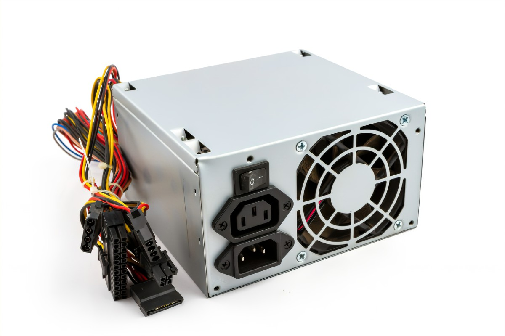

3.2.3 Fuentes de Alimentación
En cuanto a los conectores, utilizan conectores ATX de 20 pines, además de un conector independiente de 4 pines y 12 voltios. El formato ATX2 añade 4 pines más (aparte de los 4 pines independientes), uno de cada voltaje (12, 5 y 3.3 voltios) más uno de masa.
Las fuentes de alimentación ATX siempre están suministrando un canal de 5 voltios a la placa base para mantener constante la función de encendido a un contacto controlado por la placa base, que mediante un corto envía una señal que es la encargada de activar o desactivar la fuente. También permiten activarse mediante otros medios, como puede ser mediante la tarjeta de red o el módem.
La línea de 3.3V alimenta memorias, chipset, circuitería de la placa madre, tarjetas PCI y AGP. La línea de 5V alimenta puertos USB y tarjetas lógicas de discos duros y unidades ópticas. La línea de 12V alimenta al microprocesador y los motores de discos duros y unidades ópticas.
